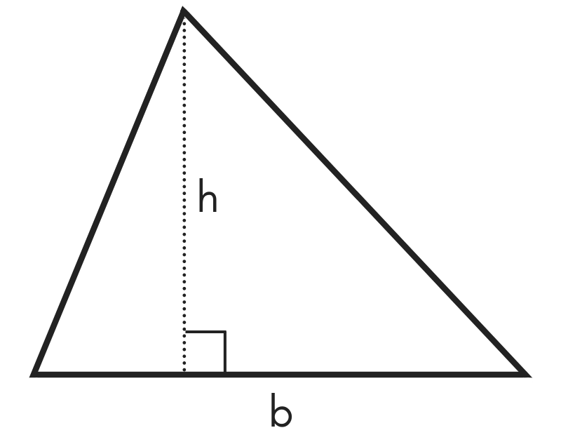

1. აიღეთ ნებისმიერი ორი რიცხვი, შეკრიბეთ და შემდეგ შეამოწმეთ, თუ ჯამი არის ლუწი მაშინ დალოგეთ "ლუწი" თუ კენტი მაშინ "კენტი". გაითვალისწინეთ, რომ რიცხვები შეიძლება იყოს უარყოფითი
2. მოცემული გაქვთ სამკუთხედის ერთი გვერდი b და სიმაღლე h გამოთვალეთ სამკუთხედის ფართობი(ფორმულას არ დავაზუსტებ) b და h შეიძლება იყოს ნებისმიერი რიცხვი, აქვე გაითვალისწინეთ რომ თუ რომელიმე რიცხვი არის უარყოფითი გთხოვთ შეაბრუნოთ და გახადოთ დადებითი
